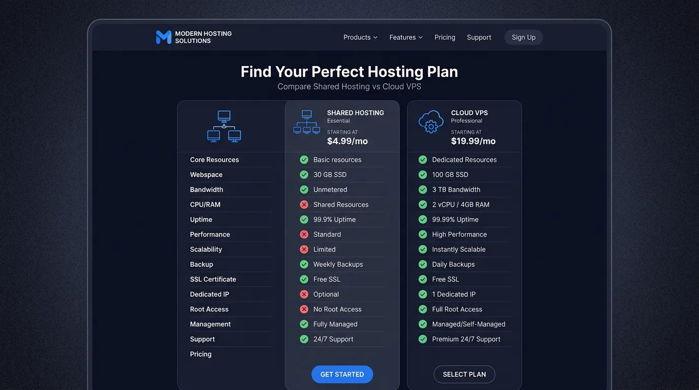

Khi bắt đầu xây dựng một website hoặc muốn nâng cấp hệ thống hiện tại, câu hỏi đau đầu nhất mà các chủ doanh nghiệp và cá nhân thường gặp phải là: "Nên mua Shared Hosting hay thuê VPS?". Việc chọn sai nền tảng không chỉ làm lãng phí tiền bạc mà còn khiến website tải chậm, mất khách hàng và tụt hạng thê thảm trên Google.
Trong bài viết tổng hợp chuyên sâu này, chuyên gia từ TeamDevDesign sẽ mổ xẻ tường tận sự khác biệt bản chất, so sánh ưu/nhược điểm và đưa ra lời khuyên chính xác giúp bạn chọn đúng giải pháp "đo ni đóng giày" cho mô hình kinh doanh của mình.
Để dễ hình dung nhất về công nghệ máy chủ, hãy tưởng tượng Internet là một thành phố và website của bạn là một cửa hàng.
Shared Hosting giống như việc bạn thuê một chiếc giường trong ký túc xá sinh viên. Bạn chia sẻ toàn bộ không gian, phòng tắm, nhà bếp (tài nguyên CPU, RAM, Băng thông) với hàng trăm người khác trong cùng một tòa nhà (Máy chủ vật lý). Nếu một người cùng phòng sử dụng quá nhiều nước (website của họ bị quá tải hoặc bị DDoS), bạn cũng sẽ bị mất nước (website của bạn bị chậm hoặc sập theo).
VPS giống như việc bạn thuê một căn hộ khép kín trong tòa chung cư. Mặc dù bạn vẫn sống chung trong tòa nhà (Máy chủ vật lý), nhưng bạn có chìa khóa riêng, đồng hồ điện nước riêng, và một không gian sống độc lập. Không ai có thể làm phiền hay dùng lố tài nguyên của bạn. Hơn thế nữa, bạn được phép tự do đập đi xây lại, sơn màu gì tùy thích (Toàn quyền cài đặt hệ điều hành và phần mềm).
Dưới đây là bảng so sánh 5 tiêu chí quan trọng nhất quyết định sự sống còn của một dự án web:

| Tiêu chí đánh giá | Shared Hosting | VPS (Virtual Private Server) |
|---|---|---|
| 1. Hiệu năng & Tốc độ | Trung bình. Tốc độ phụ thuộc vào "hàng xóm" trên cùng server. | Tuyệt vời. Tài nguyên (RAM, CPU) là của riêng bạn, không chia sẻ với ai. |
| 2. Tính bảo mật | Thấp. Dễ bị lây nhiễm chéo mã độc nếu server cấu hình kém. | Cao. Môi trường ảo hóa hoàn toàn độc lập, an toàn tuyệt đối nếu cấu hình chuẩn. |
| 3. Quyền quản trị hệ thống | Hạn chế (Chỉ được dùng cPanel/DirectAdmin cấp sẵn, không có Root). | Tối đa (Full Root Access). Tự do cài mọi hệ điều hành, Nginx, Redis, Memcached. |
| 4. Khả năng mở rộng (Scale) | Khó khăn. Phải nâng cấp lên gói cao hơn hoặc chuyển máy chủ. | Rất linh hoạt. Tăng CPU/RAM chỉ bằng 1 cú click chuột và mất 5 phút khởi động lại. |
| 5. Chi phí & Yêu cầu kỹ năng | Rẻ ($2 - $5/tháng) và Rất dễ sử dụng (Dành cho người không rành IT). | Cao hơn ($5 - $20/tháng) và Đòi hỏi kỹ năng IT để cài đặt, bảo mật, cấu hình. |
Mặc dù có nhiều nhược điểm về hiệu năng so với VPS, Shared Hosting vẫn là sự lựa chọn số 1 trên toàn cầu vì tính tiện lợi, "cắm là chạy" của nó. Bạn nên chọn Hosting nếu:
Nếu website là "nồi cơm điện" của doanh nghiệp, là kênh tạo ra doanh thu chính, việc sử dụng Shared Hosting là một rủi ro lớn. Bạn cần phải chuyển sang VPS khi:
Hoàn toàn được. Bạn có thể bắt đầu với Shared Hosting cho tiết kiệm. Khi website phát triển, việc di chuyển toàn bộ dữ liệu (migrate) sang VPS là quy trình rất phổ biến và dễ dàng.
Unmanaged VPS là bạn chỉ thuê "xác máy", tự cài mọi thứ và tự chịu trách nhiệm khi bị lỗi. Managed VPS (như dịch vụ của TeamDevDesign) là nhà cung cấp sẽ thay bạn cài đặt, bảo trì, cấu hình bảo mật và sao lưu dữ liệu mỗi ngày.
Có. VPS Cloud sử dụng cụm máy chủ và ổ cứng phân tán, giảm thiểu tỷ lệ chết máy (downtime). Nếu một máy chủ vật lý gặp sự cố, VPS của bạn sẽ tự động được chuyển sang máy chủ khác để tiếp tục hoạt động.
Việc so sánh Hosting và VPS giống như so sánh xe đạp trợ lực và xe mô tô phân khối lớn. Không có cái nào tốt nhất cho tất cả, chỉ có cái phù hợp nhất với nhu cầu và khả năng hiện tại của bạn.
Nếu bạn quyết định lựa chọn con đường chuyên nghiệp (VPS), TeamDevDesign đã chuẩn bị sẵn sàng cho bạn một lộ trình toàn diện để làm chủ nó. Hãy đọc lại các bài hướng dẫn chi tiết của chúng tôi:
Hy vọng qua chuỗi series này, việc quản trị máy chủ sẽ không còn là một khái niệm xa vời. Chúc doanh nghiệp của bạn kinh doanh hồng phát với hệ thống website ổn định và bảo mật nhất!